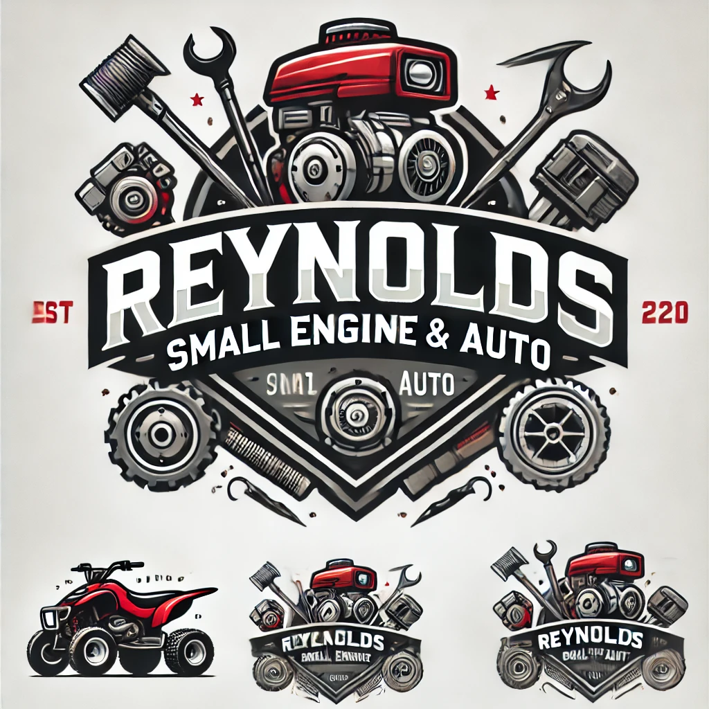

Welcome to Reynolds Small Engine & Auto! With over 20 years of experience, we specialize in repairing and servicing a wide range of small engines and light automotive vehicles. We are committed to providing reliable, top-quality service to keep your equipment running smoothly.
📍 642 Co Rd 233, Winters, TX 79567
🚗 Mobile Repairs Available